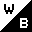
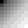
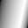
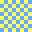
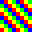
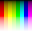
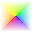

|
 basi0g01 - black & white  basi0g02 - 2 bit (4 level) grayscale basi0g02 - 2 bit (4 level) grayscale
 basi0g04 - 4 bit (16 level) grayscale  basi0g08 - 8 bit (256 level) grayscale basi0g08 - 8 bit (256 level) grayscale
 basi0g16 - 16 bit (64k level) grayscale  basi2c08 - 3x8 bits rgb color basi2c08 - 3x8 bits rgb color
 basi2c16 - 3x16 bits rgb color basi2c16 - 3x16 bits rgb color
 basi3p01 - 1 bit (2 color) paletted  basi3p02 - 2 bit (4 color) paletted  basi3p04 - 4 bit (16 color) paletted basi3p04 - 4 bit (16 color) paletted
 basi3p08 - 8 bit (256 color) paletted  basi4a08 - 8 bit grayscale + 8 bit alpha-channel basi4a08 - 8 bit grayscale + 8 bit alpha-channel
 basi4a16 - 16 bit grayscale + 16 bit alpha-channel basi4a16 - 16 bit grayscale + 16 bit alpha-channel
 basi6a08 - 3x8 bits rgb color + 8 bit alpha-channel basi6a08 - 3x8 bits rgb color + 8 bit alpha-channel
 basi6a16 - 3x16 bits rgb color + 16 bit alpha-channel |
|
|
 Willem van Schaik, Singapore, March 1998
http://www.schaik.com/wwwillem.html
Willem van Schaik, Singapore, March 1998
http://www.schaik.com/wwwillem.html